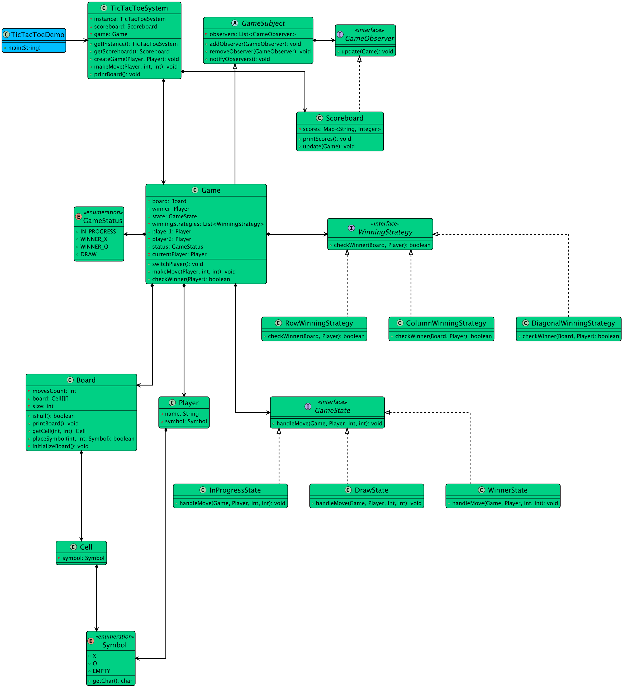

Back to Index
Module: 14 - Interview Problems Part 2Published: 2026-06-12
Designing a Tic Tac Toe Game
lldgametic-tac-toe
📌 Designing a Tic Tac Toe Game
[!info] Navigation Module: [[14 - Interview Problems Part 2/index|← Interview Problems Part 2 Overview]]
🎯 Step 1: Clarify Requirements
Functional Requirements
- Grid: Played on an N x N grid (typically 3x3).
- Players: Two players taking turns, marking 'X' and 'O'.
- Winning: First player to get N symbols in a horizontal, vertical, or diagonal row wins.
- Draw: If all cells are filled without a winner.
- Validation: Legal move checking (cell must be empty).
🧱 Step 2: Identify Core Entities

Player: Name, andSymbol(X or O).Board: A 2D array representation. ExposesmakeMove(),checkWinner(),isFull().Game: Orchestrates the turns and tracks theGameState.TicTacToe: Entry point application.
⚙️ Step 3: Architecture & Design Patterns
- State Tracking (O(1) Check): Instead of scanning the entire grid repeatedly, we can maintain row-sums, column-sums, and diagonal-sums. If Player 1 is +1 and Player 2 is -1, a sum of 3 or -3 means an instant win.
- Game Loop: Standard sequential loop with input validation.
💻 Step 4: Core Implementation (C++)
cpp
#include <iostream>
#include <vector>
#include <string>
using namespace std;
// 1. Core Entities
enum class Symbol { X, O, NONE };
struct Player {
string name;
Symbol symbol;
};
// 2. Board with O(1) checking logic
class Board {
private:
int n;
vector<vector<Symbol>> grid;
vector<int> rowSums;
vector<int> colSums;
int diagSum = 0;
int revDiagSum = 0;
int cellsFilled = 0;
public:
Board(int size = 3) : n(size), grid(size, vector<Symbol>(size, Symbol::NONE)),
rowSums(size, 0), colSums(size, 0) {}
bool makeMove(int row, int col, Player p) {
if (row < 0 || row >= n || col < 0 || col >= n || grid[row][col] != Symbol::NONE) {
return false; // Illegal move
}
grid[row][col] = p.symbol;
cellsFilled++;
int val = (p.symbol == Symbol::X) ? 1 : -1;
rowSums[row] += val;
colSums[col] += val;
if (row == col) diagSum += val;
if (row + col == n - 1) revDiagSum += val;
return true;
}
bool checkWin(int row, int col, Player p) {
int val = (p.symbol == Symbol::X) ? 1 : -1;
int target = val * n;
return (rowSums[row] == target || colSums[col] == target ||
diagSum == target || revDiagSum == target);
}
bool isFull() {
return cellsFilled == n * n;
}
void display() {
for (int i = 0; i < n; i++) {
for (int j = 0; j < n; j++) {
char c = (grid[i][j] == Symbol::X) ? 'X' : (grid[i][j] == Symbol::O ? 'O' : '.');
cout << c << " ";
}
cout << endl;
}
}
};
// 3. Game Controller
class Game {
private:
Board board;
Player p1, p2;
Player* currentPlayer;
public:
Game(Player a, Player b) : p1(a), p2(b), currentPlayer(&p1) {}
void play() {
while (!board.isFull()) {
board.display();
cout << currentPlayer->name << "'s turn. Enter row and col: ";
int r, c;
cin >> r >> c;
if (!board.makeMove(r, c, *currentPlayer)) {
cout << "Invalid move. Try again.\n";
continue;
}
if (board.checkWin(r, c, *currentPlayer)) {
board.display();
cout << "🎉 " << currentPlayer->name << " WINS! 🎉\n";
return;
}
currentPlayer = (currentPlayer == &p1) ? &p2 : &p1;
}
board.display();
cout << "It's a draw!\n";
}
};
int main() {
Player p1 = {"Alice", Symbol::X};
Player p2 = {"Bob", Symbol::O};
Game game(p1, p2);
// game.play(); // Uncomment to play in terminal
return 0;
}
🚨 Edge Cases Handled
- O(1) Win Checking: Validates the win state purely via numeric arrays rather than executing nested loops after every single move.
- Illegal Moves: Rejecting occupied tiles or out-of-bounds indices.